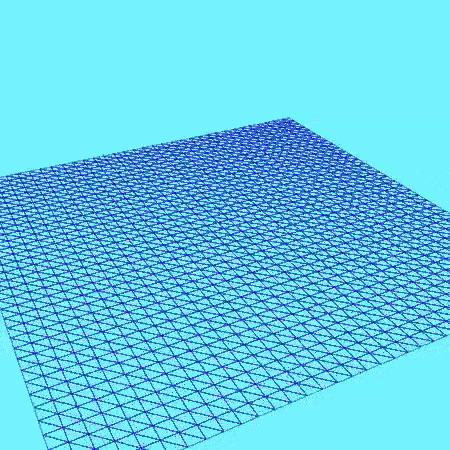
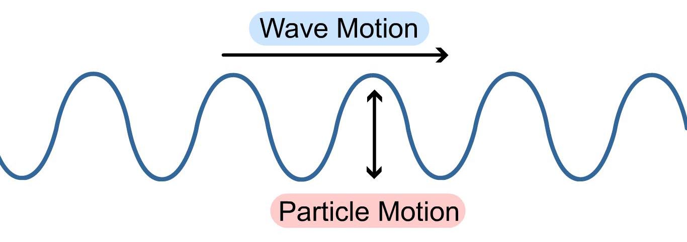
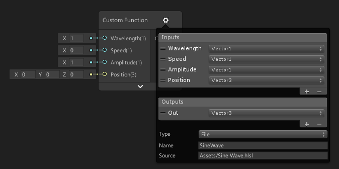
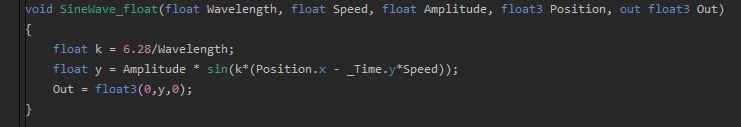
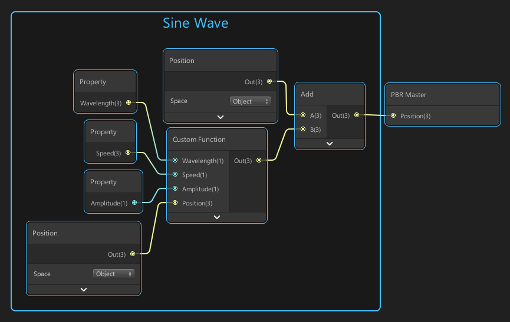
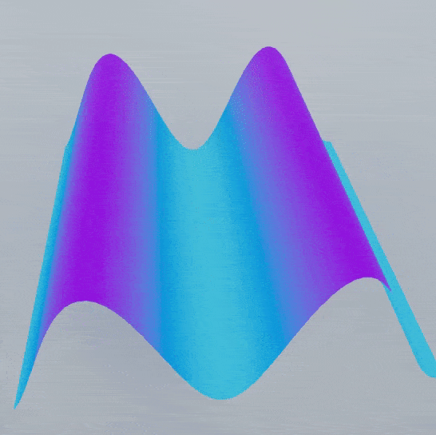
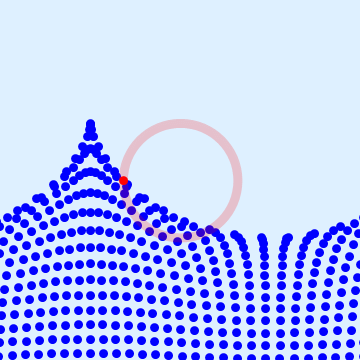
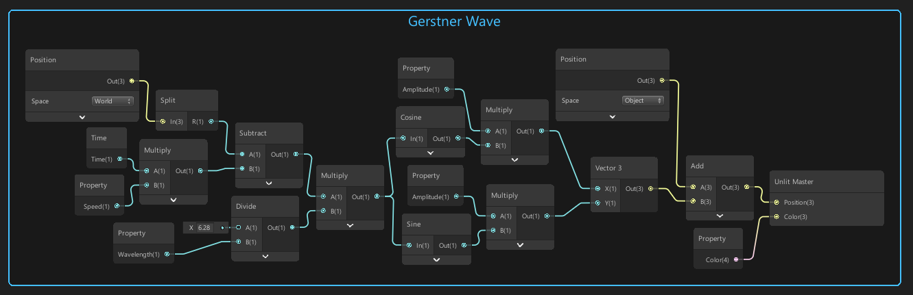
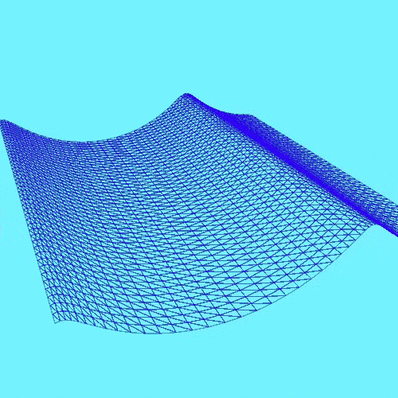

Water Part 2: Waves
Back to projects
Part 1: Tessellated Plane
Part 3: Depth
Setup
Before we want to start working with waves, we need to have a tessellated plane with a decent amount of vertex points to manipulate. We could use the basic Unity plane, but it does not have enough vertices to get the smooth wave movement we want. If you want to know how to create a tessellated plane, be sure to check out the previous tutorial.

A tessellated plane
Waves
When thinking about (mechanical) waves in the context of water, we can see them as the propagation
of energy through a medium. When the energy reaches a certain water particle, that particle gets excited and moves upwards. When the energy has passed again, the particle will move downwards again.

When we look at waves in the water (where wind is the energy source), we see that the displacement of a water particle not only happens in the y direction (up and down), but also in the x direction (left and right). One particle follows an almost circular path.

Sine Waves
When simulating waves in a shader, we will be changing the position (x,y,z) of every single vertex point of our water plane over time (t). We will start by creating a simple sine wave movement where every particle just goes up and down. A travelling sine wave is represented by the following equation.
y(x,t) = asin(k(x-vt))
| Variable |
Description |
| a |
Amplitude |
| k |
Wave Number |
| v |
Speed |
| λ |
Wavelength Lambda |
| f |
Frequency |
| w |
Angular Frequency |
the following relationships also exist
So we can represent k in our equation by 2π/λ.
Why is this the equation of a travelling sine wave?
Now that we have an equation, let's make our shader. Of course you could translate this equation directly into nodes using the position nodes and a whole bunch of arithmetic math nodes, but for such a relatively simple equation we would need at least 10-15 nodes. I think it's better to do this with a custom function node where we can write our equation in HLSL.

We add a custom function node to our graph and in the node UI, we refer to a .hlsl file called 'Sine Wave' that has a function SineWave. We also define the inputs and outputs. Our custom function node will take a wavelength, speed, amplitude and position variable.

Our SineWave function first calculates the value of k (2π/λ) and then puts it in the equation. This method only takes 1 node that calculates the sine wave and the HLSL code itself is only a few lines, elegant!

We link up this custom node by adding it to the object's position and plugging the result into the position slot of the master node.

This looks alright but this is not how water waves look in the real world, we can do better!
Gerstner Waves
In a real ocean, water particles not only move up-and-down, but also left-and-right. We can simulate this movement by letting our particles follow a circular path, this movement is described by a Gerstner Wave. A Gerstner Wave is a solution for the wave equation. In the graphic below, you can see this circular path of a 'top water particle'. Particles that are locater deeper in the body of water also follow this circular path but the radius of these paths decreases the deeper you go in the body of water.

Gerstner waves are also called trochoidal waves. A trochoid is a curve that is described by a fixed point on a circle as it rolls along a straight line. Knowing this, you can see where the name 'trochoidal wave' comes from.
Mathematically we can describe a circular motion as follows using a initial offset x0 on the x-axis.
x = acos(kx-wt) + x0
y = asin(kx-wt)
| Variable |
Description |
| a |
Amplitude |
| k |
Wavenumber |
| w |
Angular Frequency |
| λ |
Wavelength Lambda |
| f |
Frequency |
We transform this into the following equations.
x = acos(k(x-vt)) + x0
y = asin(k(x-vt)) + y0
Now that we have the equation for this circular motion, let's use it in shader graph. Our node setup looks like this.

We get the following result which already looks a bit better than a simple sine wave.

Multiple Waves
By adding together multiple Gerstner waves, they will interact and we will get a more interesting wave pattern.
Fast Fourier Transform Waves
This section is under construction.
Part 1: Tessellated Plane
Part 3: Depth
Sources
https://en.wikipedia.org/wiki/Mechanical_wave
https://en.wikipedia.org/wiki/Wind_wave
https://catlikecoding.com/unity/tutorials/flow/waves/
https://en.wikipedia.org/wiki/Trochoid
https://www.reddit.com/r/interestingasfuck/comments/afefxk/how_particles_move_on_a_wave_in_a_liquid/
https://labs.karmaninteractive.com/ocean-simulation-pt-3-gerstner-waves-a747069e1b59
https://labs.karmaninteractive.com/ocean-simulation-pt-4-fft-waves-90fdd55c7f25
https://www.youtube.com/watch?v=GxAyRJjCAsQ
https://www.youtube.com/watch?v=xcSVFnBQY-c
@alexanderameye
alexanderameye@gmail.com